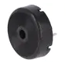
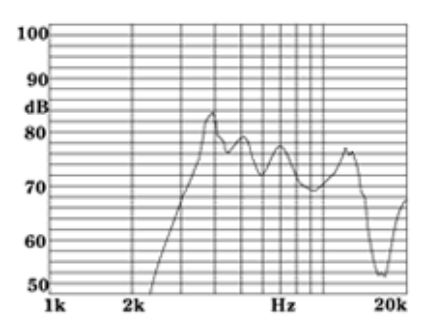
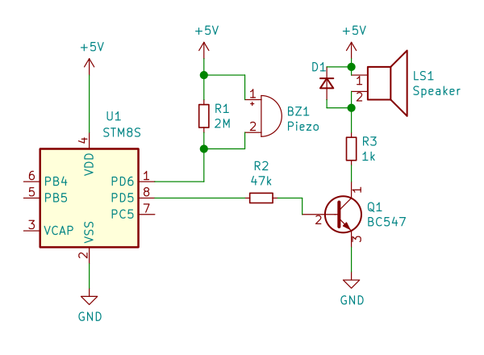
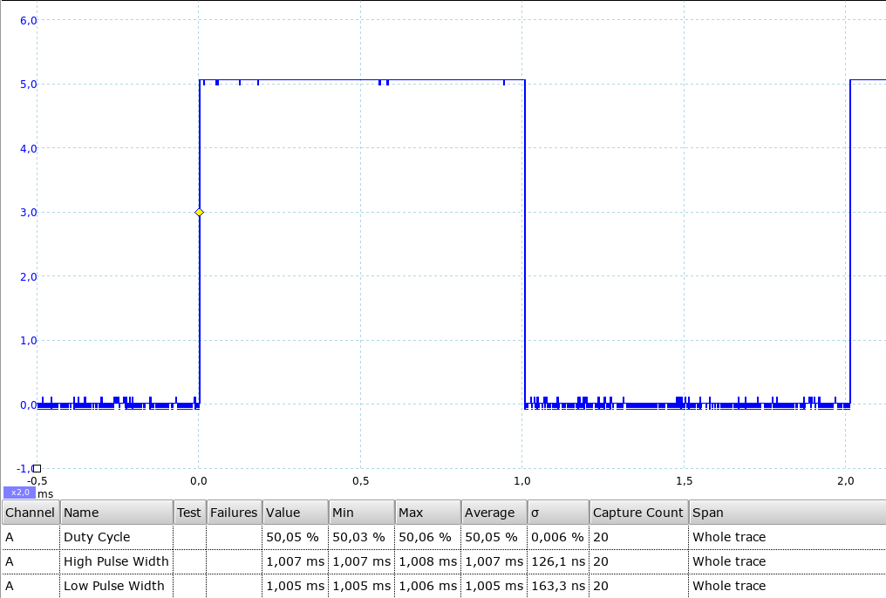
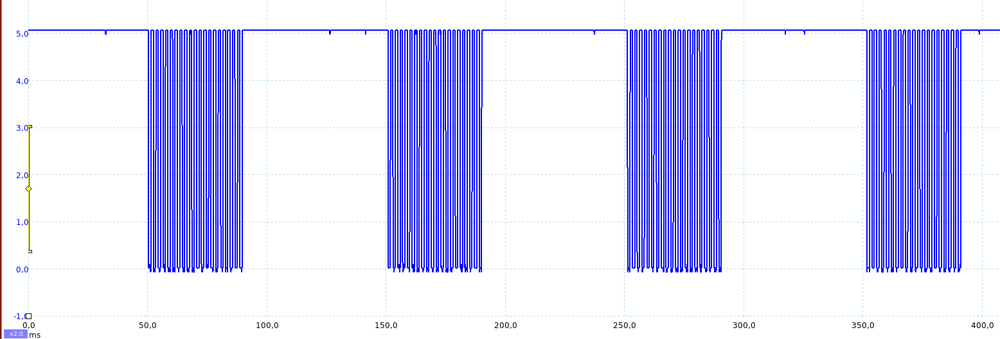

Zvuk je jak známo mechanické vlnění. Pro jeho vyloudění tedy potřebujeme nějaký “vlnič” – tedy elektro-akustický měnič.

Nejjednodušší je asi použít piezo měnič. Ten má ovšem poněkud omezený frekvenční rozsah. Jeho frekvenční charakteristika může vypadat například takto:

(Mimochodem prý existuje nějaký výzkum, podle kterého optimální frekvence pro budík je 100 Hz; nebo to bylo 300 Hz? Prostě poměrně nízký kmitočet. Ale levné bezporuchové piezo-měniče takto nízko prostě nejdou. Tak na nás ty budíky pískají a pípají a my vstáváme potom naštvaní.)
Další možností je použít reproduktorek. V tomto případě je třeba posílit výstup tranzistorem. Zapojení tedy může vypadat například takto:

Tranzistor je ve spínacím režimu a membrána reproduktoru má pouze dvě polohy. Tedy klidovou polohu (bez proudu) nebo výchylku odpovídající kladnému proudu. Do výchylky odpovídající zápornému proudu se membrána nedostane, protože proud protéká vždy jedním směrem. Dioda D1 vybíjí cívku reproduktoru, při sestupné hraně.
Program, který nám vyloudí frekvenci \(500\,\mathrm{Hz}\) může vypadat například takto. Perioda je \(2\,\mathrm{ms}\). Půl periody tedy \(1\,\mathrm{ms}\).
void main(void)
{
init();
while (1) {
PZ_UP;
delay_ms(1);
PZ_DOWN;
delay_ms(1);
}
}

Pokud chci jen pípnout a poté nechat chvilku ticho jednoduše nebudu cvičit s membránou do nekonečna, ale pouze několikrát (\(20 \cdot 2\,\mathrm{ms}\)) a pak nechám chvilku ticho.
void main()
{
init();
uint16_t i;
while (1) {
for (i = 0; i < 20; ++i) {
PZ_UP;
delay_ms(1);
PZ_DOWN;
delay_ms(1);
}
delay_ms(60);
}
}

Tento způsob práce je ale blokující, protože se pořád jen čeká. Mikroprocesor vlastně pořádně nemůže dělat nic jiného. Proto použijeme multitasking 1 a stavový automat.
void main(void)
{
uint32_t timeL = 0;
uint32_t lastTime = 0;
uint16_t count = 0;
enum state_of {
STATE_PAUSE,
STATE_UP,
STATE_DOWN
} state = STATE_UP;
uint32_t time = 0;
init();
while (1) {
switch (state) {
case STATE_PAUSE:
PZ_DOWN; // v pauze dám repráček do klodového stavu
if (milis() - lastTime > 4321) {
lastTime = milis();
state = STATE_UP;
}
break;
case STATE_UP:
PZ_UP;
if (milis() - lastTime >= 4) {
lastTime = milis();
state = STATE_DOWN;
}
break;
case STATE_DOWN:
PZ_DOWN;
if (count >= 10) {
count = 0;
lastTime = milis();
state = STATE_PAUSE;
break;
}
if (milis() - lastTime >= 4) {
lastTime = milis();
count++;
state = STATE_UP;
}
break;
default:
state = STATE_PAUSE;
}
if (milis() - timeL > 500) {
timeL = milis();
LED_REVERSE;
}
}
}
Zdrojové kódy¶
Kompletní zdrojové kódy naleznete v repositáři na GitHubu:
https://github.com/spseol/STM8-zvuk-zaklad